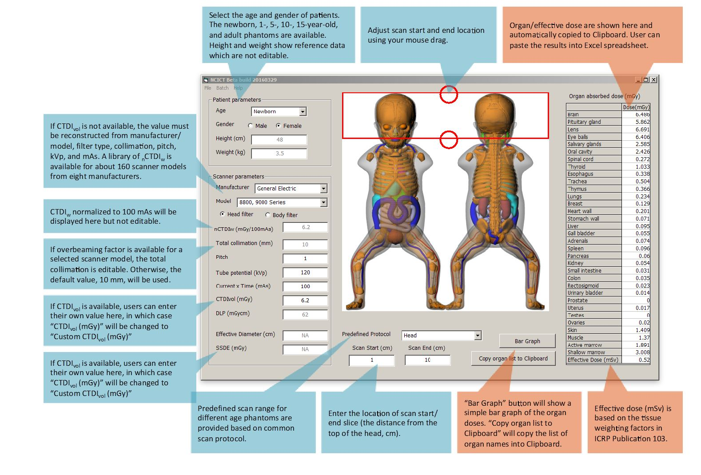

GRAPHICAL USER INTERFACE MODE
BATCH CALCULATION MODE
The Batch Calculation Mode is designed to compute organ doses for a large number of patients. Users must generate an input file in ASCII format for batch dose calculations. Input file is composed of a series of patient and scan parameters in a certain number of columns (each column has 8 spaces). NCICT has two Batch Modes, “Batch – with CTDIvol” and “Batch – without CTDIvol” depending on the availability of CTDIvol.

Batch – without CTDIvol
This mode is for the cases where CTDIvol is not available. Demo file “demo_no_ctdivol” is included in the software folder (C:\Program Files\National Cancer Institute\NCICT). Users can import the “batchdemo” file using “Batch – without CTDICTDIvol” menu, and then “batchdemo.o” containing organ/effective doses will be generated in the same folder. The following parameters are required for dose calculations. Eleven columns (each column has 8 spaces) contain the following parameters:
Column 1-studyid
Column 2-scan start: 1 cm from the top of the head
Column 3-scan end (cm from the top of the head)
Column 5-model (see “Scanner make and model library.xlsx”)
Column 4-CTDIvol
Column 5-age Male
Column 6-age
Column 7 – gender ID (female=1, male=2)
Column 8-kvp
Column 9-mAs
Column 10-pitch
Column 11-filter (optional, head=1, body=2)
Here’s an example line for the head scan of a 15-year-old male.
Column 1-study ID: 10001
Column 2-scan start: 1 cm from the top of the head
Column 3-scan end: 15 cm from the top of the head
Column 4-make (see CTDI library): GE
Column 5-model (see CTDI library): GE HiSpeed FX/i, LX/i
Column 6-age: 15 year-old
Column 7-gender (1-female, 2-male): Male
Column 8-kvp: 120 kVp
Column 9-mAs: 125 mAs
Column 10-pitch: 1
Column 11 (optional)-head filter
Output file contains the following results in a single row:
Column 1-Study ID
Column 2-CTDIvol
Column 3-DLP
Column 5-model (see “Scanner make and model library.xlsx”)
Column 4 to 36-doses for 33 organs (list of organ is the same with GUI)
Column 37-effective dose based on ICRP 103 tissue weighting factors
Batch – with CTDIvol
This mode is designed for the cases where CTDIvol values are available from scanners. Demo file “demo_ctdivol” is included in the software folder (C:\Program Files\National Cancer Institute\NCICT). Users can import the “batchdemo” file using “Batch – with CTDIvol” menu, and then “batchdemo.o” containing organ/effective doses will be generated in the same folder. The following parameters are required for dose calculations. Eleven columns (each column has 8 spaces) contain the following parameters:
Column 1-studyid
Column 2-scan start: 1 cm from the top of the head
Column 3-scan end (cm from the top of the head)
Column 4-make (see “make & model code library.xlsx”)
Column 4-CTDIvol
Column 5-age Male
Column 6-gender (1=Female/2=Male)
Column 7-kvp
Column 8-filter (optional, head=1, body=2)
Here’s an example line for the head scan of a 15-year-old male.
Example: 10001 1 15 15.2 15 2 120 1
Column 1-study ID: 10001
Column 2-scan start: 1 cm from the top of the head
Column 3-scan end: 15 cm from the top of the head
Column 4-model (see CTDI library): CTDIvol of 15.2 mGy
Column 5-age: 15 year-old
Column 6-gender (1-female, 2-male): Male
Column 7-kvp: 120 kVp
Column 8 (optional)-head filter